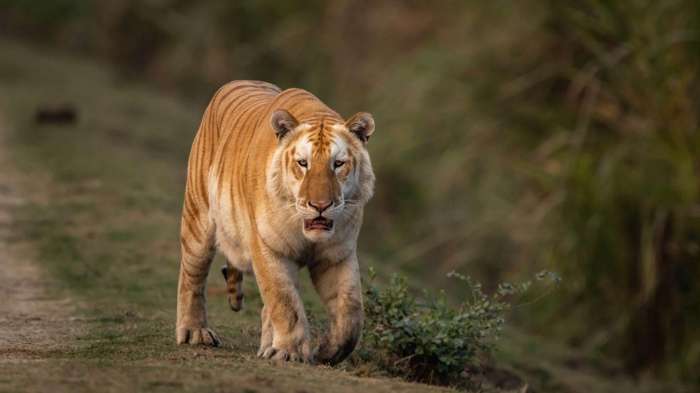
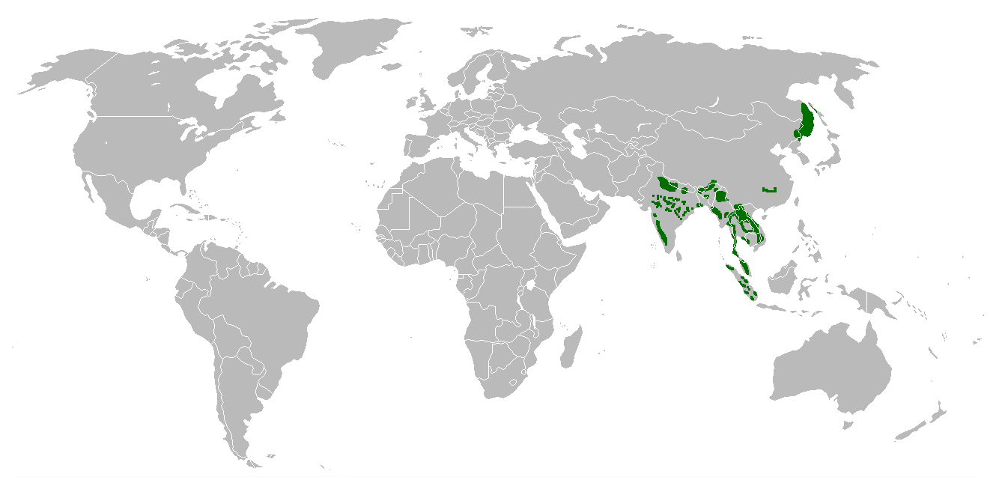

Descripción
El riesgo de extinción de este mamífero félido es uno de los más altos del planeta. Se calcula que a principios del siglo XX había 100.000 ejemplares aproximadamente, mientras que en la actualidad solo quedan unos 4.000 en libertad y 20.000 en cautividad. El mayor enemigo de este animal en peligro de extinción: el hombre y la caza furtiva. Las seis subespecies de este fascinante animal se encuentran repartidas por Asia: principalmente en India, Indochina y China. El tigre de Bengala, la especie más numerosa, nos ofrece la imagen más conocida de este animal, que es animal nacional de la India y de Bangladesh. El hábitat de este implacable depredador son los bosques densos y la sabana, y es fácil de reconocer por sus características rayas verticales que suelen combinar el naranja y el negro, con zonas blancas. Se dice que no hay dos ejemplares iguales, pues los investigadores utilizan estas rayas como huellas dactilares para diferenciar un tigre de otro.

Decenas de tigres mueren
en Vietnam por un posible
brote de gripe aviar

Los tigres regresan a
Kazajistan despues de 10 años
extintos

Hay una esperanza para
los tigres: aumentan su
numero en Tailandia
Distribuicion del Tigre
